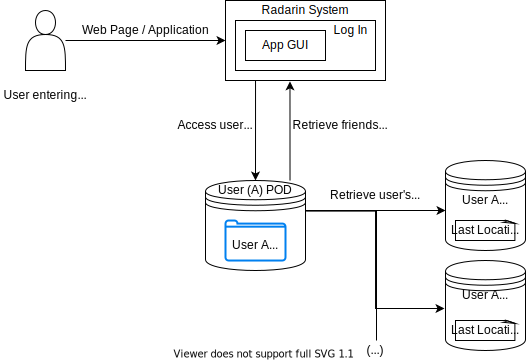
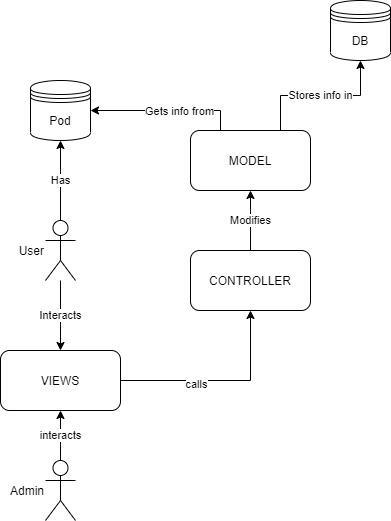
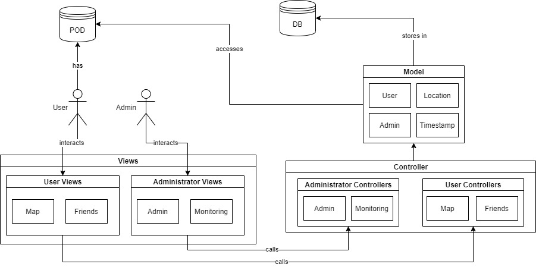

1. Introduction and Goals
The goal of this project is to facilitate meetings between friends using new technologies. The application will use the geolocation of the devices to connect close friends.
The technologies that will be used in this project will be:
-
The location provided by the device, if the users voluntarily allow it
-
The system will be compatible with the SOLID project.
-
All the user’s data will be stored on the user’s pod, who will be the owner of its own data.
-
The application won’t have any control over the user’s data.
-
The user will have control over who can see their location at any time.
1.1. Requirements Overview
Here we have the functional requirements that our application will provide:
-
Users will be able to visualize and manage locations in the web application.
-
Users will be able to send their location to the pod and get notified if friends are nearby.
-
Users' data will be stored in a completely decentralized way, in their personal pod.
-
All the users' information will be queried from the users' pods.
1.2. Quality Goals
Our quality goals in this application are:
| Quality goal | Motivation |
|---|---|
Confidentiality |
The use and storing of user data is decentralized. |
Security |
The application shouldn’t have any vulnerable flaws. |
Accesibility |
The application should be easy to use by non technical people. |
Originality |
The application idea and solution should be innovative. |
1.3. Stakeholders
| Role/Name | Expectations |
|---|---|
Course teachers |
The teachers expect a project delivery from the students which fullfills the requirements and is completely functional. |
Users |
Users expect an easy to use application, a secure policy of data management and correct functionality. |
Inrupt and Empathy |
They expect an interesting application which shows the knowledge of the students who worked on it. |
Other students |
Other students expect a good example of an application which they can learn from or reuse parts. |
The Team |
As students, we expect to learn new fields of the programming area and develop an optimal application with our work. |
2. Architecture Constraints
| Constraint | Description |
|---|---|
React |
The application will be programmed using the React Framework. |
Solid |
The application must use the Solid pods to work with users information. |
Docker |
The application will run on docker. |
Interactive Map |
The application will contain a map to show the friends and user localizations. |
GitHub |
All the changes are registered in a version control app. In this case we use git bash and GitHub. This provides several organization tools like issues, branches or wikis to make the work easier. |
| Constraint | Description |
|---|---|
Time |
The application will be finished before the end of the course. |
Team size |
The team is composed of four people and usually is composed of six people. |
Data |
The data is stored completely on the users' pods. Then their data is managed only by them. |
Other work |
The students work on other subjects and some even have a job. |
Meetings adjustment |
The students are busy and we do not have the same timetables on a day so sometimes is difficult to arrange meetings. Also, remote work makes comunication worse but at least we do not need to waste time travelling to meet. |
| Constraint | Description |
|---|---|
JavaScript Conventions |
The application will be written following the Javascript conventions https://jsdoc.app/ |
Language |
The application will be in English. |
Good coding |
Modularity, low coupling and other characteristics of good code are needed for high sustainability and extension. |
Solid |
The application must follow the Solid conventions (https://github.com/solid/solid-spec). |
3. System Scope and Context
Our system: Radarin, is aimed to ease the meeting and communication with friends using the new technologies, while respecting user’s privacy and confidential data as close as possible. This is possible due to the decentralized nature of the system, being integrated with SOLID where users will be able to manage their PODs so all their personal data will be under their control. All the data used on the application is stored in the users' pods, so they can be unconcerned about their private data usage.
Radarin is designed to use users locations and timestamps , so they can get notified of any close friend around them at a given time. In addition, users can save their own locations manually and store them into the pod.
3.1. Business Context

3.2. Technical Context

4. Solution Strategy
4.1. Technologies
- React
-
React allows us to create an adaptable graphic interface and managing data changes with ease.
- Solid
-
Solid gives the user the freedom to choose what data he wants to share and gives us an easy way of accessing it.
- Docker & Heroku
-
Docker and Heroku will be user for application deployment.
- Jest
-
Tool we use for testing the components and the renderization.
- Puppeteer
-
Tool used for the end to end tests.
- Gatling
-
Tool used for the load tests.
4.2. Top-level decomposition of the system.
- MVC
-
MVC is a very common architectural pattern for applications that need a user interface. It is widely known and easy to work with.
4.3. Key quality goals
- Privacy
-
One of the points in which we want to focus is user privacy. With the use of SOLID pods, we are able to store no information from the user. This increases their privacy and reduces the number of ways a user can can be attacked. In this aspect, we completely avoid managing any kind of information, thus making a data breach nearly impossible: no database = no possible leaks. The only ways of breaking in we’ve figured out are two: either a user suffers a man-in-the-middle attack, which would only affect this particular user and their friends, not the application as a whole, or our github accounts are hacked, so a potential attacker could upload malware to the repository.
- Software quality
-
Another important point we want to take in mind is the development of quality software. We want our project to follow a minimum number of conventions, have a correct package structure and make use of well known arquitectural and design patterns when possible, aside of having an addecuate number of comments and documentation to explain the functionalities of the system.
- Proper system operation
-
To make sure the application accomplishes a minimum of quality goals, we want to make sure a proper testing methodology is followed. One of the main problems we want to avoid is simple bugs that evolve into more complex ones. We believe the best way around this is to find errors as soon as possible. To accomplish these with the maximum level of coordination among the team members, small tests for specific parts of the application will be ran before implementing new functionalities to the full application. After making sure everyting works as expected, it will be merged with the main project, where it will be tested again. The types of tests to be ran are unit tests, acceptance tests and load tests.
4.4. Organizational decisions
- Lenguage
-
Comments, code and issues will be in English for internationalization purposes. The work will be decomposed in smaller tasks, that will be assigned to a member or a group. These tasks will most of the times be represented as issues in Github.
- Issues
-
For each task in current development, a member or group of members will be assigned. Any doubt that comes up during the development of a task will be written as a comment to the issue, to be further discussed among the whole development team. These will help us divide the application into smaller pieces, but taking advantage of the skills of every member.
- Microsoft Teams
-
Regular meetings will be organized. In these meetings all team members will discuss important development topics, such as important design/architectural decisions or the way of organizing a set of functionalities to be implemented, a change in documentation… Due to the pandemic situation at the time of development, these meetings will take place via Microsoft Teams.
5. Building Block View
5.1. Level 1

5.2. Level 2

6. Runtime View
6.1. Changing your current location:
Alice : Moves → Radarin : requests a location update → Alice’s pod → updates the location
6.2. Checking someone else’s location:
Bob : Check’s Alice location → Alice’s pod : Sends the current location → Radarin : Displays Alice’s current location
6.3. Checking for nearby friends:
-
Alice : checks for nearby friends → Radarin: Checks for all friends that are nearby (if their distance from Alice is less or equal than a given range) → update map with those locations → Display notification
6.4. Update friend’s locations:
-
Radarin: Asks all Alice’s friend’s (who are in a determined distance) pods for their location → Display the returned locations
-
Note: This happens automatically. Deppending on the distance of the friend, it will be updated faster or slower.
6.5. Load saved locations:
-
Radarin: Requests Alice’s pod for its saved locations list → Display the list on the map
6.6. Remove a location from the saved locations:
-
Alice : clicks on the "-" button next to the location to remove → Radarin: Removes the location from the list. → Removes the location from the map
6.7. Add a location to the saved locations:
-
Alice: Writes a location name in the text area → Clicks on the "+" button → Radarin: Adds the current location to the list.
6.8. Save the changes on the saved locations list:
-
Alice: Makes changes to her locations list → Radarin: asks Alice’s pod to override the saved locations list → Alice’s pod: Updates the location’s list.
6.9. Let a friend see where you are:
-
Alice: clicks the "✓" button next to Bob’s name in the friends' list → Radarin: asks Alice’s pod to override the read permissions of the file where the last location is stored → Alice’s pod: Updates the permissions.
6.10. Revoke permissions to a friend to see where you are:
-
Alice: clicks the "✖" button next to Bob’s name in the friends' list → Radarin: asks Alice’s pod to override the read permissions of the file where the last location is stored → Alice’s pod: Updates the permissions.
7. Deployment view
To use this application there are two different but similar approaches the user can choose between. First, we will list the common points and then we will proceed to explain the differences between both approaches.
7.1. Common points
-
The user can access the application from any device with a web browser, even though Chrome and Firefox are recommended, since both are the ones we used during development. Brave Browser, which is known to be strongly focused on security and privacy, is, so far, discouraged because even if its main principles are similar to the ones of our application, this browser is known to interfere with the location tracking. We look up to solve this issue in future version and make ourselves available in every modern browser. In mobile devices the situation is similar, and thus we recommend the Chrome application, which is the one we used for testing.
-
Both location and pop up windows must be enabled for our application to work. The location is asked due to obvious reasons and the pop up windows are because of the login system. In future versions we might choose a different approach for the login or give an alternative.
-
The application will play sounds to notify the user when their friends move. This is optional, but it will make the experience easier if you have the tab in the background.
-
So far there is no mobile app, but we look forward to develop one in the future.
-
As long as you have a SOLID pod, no registration is needed, since we chose not to use a central database. This means anyone with a SOLID pod can easily use our application anytime in a quick, simple, straight-forward way.
Regarding the application deployment, it is done in two ways. Via Heroku, where anyone can access through https://radarinen1awebapp.herokuapp.com or locally, where the users themselves can host the application easily.
7.2. Heroku hosting
This is the main and preferred option. Here the application is hosted by Heroku and can be accesed directly from any web browser. This alternative needs less resources, since you don’t need to have a process running in your computer, and less technical skill.
7.3. Local hosting
Tech savvy users, or the most security-concerned ones can choose this option to fully controll every petition and connection the app does. To host it, the user can choose to directly run it using npm or to use a docker.
7.4. Motivation
This deployment structure is motivated by a strong belief in internet security and privacy. During development we always tried to wear the users' shoes and give them as many possible options as we could for them to be and feel safe using our application. We have no interest in your data, nor think anyone should have, and that’s why we chose to create an app that can even be completely hosted by yourself so you don’t need to give our webpage permissions on your pod. This way you can be absolutely and completely sure there’s no way we are obtaining ilegitimate profit from you. Anyway, the application is open source, so anyone could extend it and it would still be compatible, given the application specifications.
8. Cross-cutting Concepts
Here we have the different type of concepts in our case and also a brief explanaition:
8.1. Domain concepts
Domain concept |
Description |
User |
It represents the user of the application. It is defined by a Solid account and all the information about him is there. |
User current location |
The current location is shown in the app to be seen by the users' friends. It is one of the main goals that the current location is shown. Also, the user can select which friends can see this. |
Users' Friends |
They represent the friends of the users. They are gathered from the Solid friends interface. Useful to allow users to interact with each other |
User saved locations |
As this app contains the user current location, he can move around and save the locations where he has been with a unique name and a unique position. |
8.2. User Experience concepts
This application is very simple on the view so we expect the user experience to be fast, simple and efficient. First, we need the user to be logged in. He can do this by clicking on the side menu and then on the log in button. After he logs in, he can see in the map his current location. On the side menu it can be seen the list of saved places and the list of friends.
Saved locations interaction: it is a simple textbox (to add the name of the location) with an add button. The user can put a name and click the add button and instantly see how the saved location is added on the list with a delete button.
List of friends interaction: the friends of the user are shown in a simple list. Each user has a button to allow the user to share his location with them. Also, each friend name has a link to their pod. The user can know if a friend is sharing his location with they if the friend’s name is green. If it is grey, it means that either that friend isn’t using radarin or that they are not sharing their location with the user.
8.3. Safety and security concepts
We think that our application is very secure and safe. First, we have a control of the users carried on by Solid, a trusted bussines which provide the pods. Then, brute force attacks or fraudulent log ins are covered. Also, as the application isn’t using a database, vulnerabilities like SQL Injection, NoSQL attacks or any other type of compromises regarding the database won’t be applicable here. Because of that an attacker won’t ever be able to enumerate the users.
Secondly, the safety on our application. We think its also very high because the user current location is only shared to his friends if and only if he has this friend added on solid and allows the sharing on the app. Therefore, we have a double gate security, the current location can be only shared to friends, and then the user can even share it to the friends he likes.
8.4. Architecture and design patterns
After our course on design patterns and our experience on programming we tried to have a low coupling application. To archieve this, we applied several things:
-
Modularity: the application is composed of several components that together make the app work. Changes on an individual component mostly don’t affect other parts of the system.
-
Facade design pattern: when coding, we realised that all the communication could be gathered in a Facade class. Then we created the SolidFacade.js class that interacts with Solid (loading friends and locations, saving locations, etc.).
8.5. “Under-the-hood” concepts
All the data of the user is stored in Solid, and the application doesn’t have a real backend. One flaw is the use of Google Maps, because of the Google privacy policies. However, the user can choose to use Leaflet to have a free open source tool that does not take the information to make credit with it.
8.6. Development concepts
We have learnt several new concepts on this project:
-
Communication concepts
-
Division of work concepts
-
Work structuring concepts
-
Work meetings concepts
-
Work organization concepts
-
Familiarize with new tools concepts
-
Work in group meetings
-
Presenting our work to clients and stakeholders
Among other small facts.
8.7. Operational concepts
As explained before, this application is very simple (but not unuseful) in this first version so the user only have key options. This simplicity is optimal because it is more of tool than an entertainment application. The focus is on the connection between friends, the distance between them, and the locations that the user can save.
This functionalities are the core of our application, and there are several operations that allow working with them:
-
Circle of friends radius: the user can increase or decrease the radius where they can see their friends.
-
List of friends operations: the user can start and stop sharing their current location to any of their friends in any moment.
-
List of saved locations: the user can simply add a location with the textbox and the add button, or remove any saved location with the remove button next to each location.
9. Design Decisions
In this section, we document the decions made that affect the application. However, they are not simply listed, they are explained with their context, status and consequences. Here we have the decisions made:
9.1. Usage of google maps API
- Context
-
Obviously, for this app we need a map. So at first thought, like everybody nowadays, Google Maps comes up.
- Decision
-
After some investigation and some discussion, we decided that we were going to use the Google Maps API despite the fact that the free or demo part is limited. We thought that for a prototype like this application, we get a very useful API without the need of any payment.
(This was added later) In the end, we provide the option of choosing between Google Maps API and Leaflet API.
- Status
-
Accepted.
- Consequences
-
The usage of Google Maps API has brought us several useful functions, like Street view and the different map modes. We take for granted that we won’t surpass the limit of the free version by now.
9.2. Usage of built in SOLID friends
- Context
-
In this app the work with friends is strictly neccesary (if not it would be useless). Furthermore, there are several ways of storing friends and connection between accounts.
- Decision
-
Initially, we used to store the friends of each user in a file called "friends.ttl". However, we found out that we could easily use the SOLID friends. In your SOLID pod you can add friends and so we get the list of friends and their pod.
- Status
-
Accepted.
- Consequences
-
A very user-friendly way to let the users add friends and very accessible from the SOLID pod webpage. Also, we leave a door open to futher improvement and maybe a friend adding interface. The main counterpart of this is that for testing purposes we need to create several pods and is not as easy as changing a file.
9.3. Usage of a MongoDB central Database
- Context
-
We need to be able to access the last location of every user and show it to their friends. At first glance a central database to store it seemed a good solution and, even if this goes partially against SOLID principles, we thought the last location was a good trade off for the perfomance boost we would get by avoiding asking the PODs every time.
- Decision
-
Once we started implementing, we realised that accesing a SOLID POD was not at all as time consuming as we thought, so we decided to keep the idea of the central database in the background just in case and follow the path of asking directly each POD. This decision was taken after testing the time a POD request takes, which was fairly low, and some research, where we found that in one of the main social networks today, Facebook, the average person has 150 friends. Since in this application you share something even more private than your photos, which is your real-time location, we assume that this number will be even lower, since there will be only close friends. Besides, using SOLID guarantees that our users will be people that worry about their own privacy, which will probably work in the same direction.
- Status
-
Rejected.
- Consequences
-
SOLID principles are stronger in our application, since there is no kind of central server and the application works even if deployed locally by the user. Besides, we also avoid mutual interference in performance between users and add an extra layer of security: if there are no central servers nor databases, they cannot be attacked and, in case a user had too many friends for the application to handle mantaining an acceptable performance, it would affect only them.
9.4. Usage of an optimization ring system to obtain friends' locations.
- Context
-
Even if, as explained above, the average user of this app will not have too many friends, just in case we decided to create an optimization system to reduce the number of POD requests we send. The reasoning behind it is that you don’t need to constantly request a location that you won’t display since it is too far away. E.g: If your friend is in Madrid and you are in Oviedo with a range of 5km, it will take at least 1 hour for your friend to be close enough to be painted in the map. In this mean time we do not need to upload their location as frequently.
- Decision
-
The friends are divided in 3 different rings according to their distance to the user after the first time the whole list is traversed. From then on, each ring will be assigned a time interval after which it will be updated
- Status
-
Accepted.
- Consequences
-
Improvement in performance, which will be greater for users with lots of friends.
9.5. Use of admin role
- Context
-
The app specification an admin was required. This admin could manage some decisions about the users.
- Decision
-
After discussing this issue and considering the implementation of our app, we decided that it was completely useless to have an admin role user. All the controls that users need are provided and each user can only control their current location sharing and the list of friends. An admin here could not do anything special without breaking the main principles of the application.
- Status
-
Accepted.
- Consequences
-
A cleaner app with complete authority over user information on each user.
9.6. Use of a library for notifications
- Context
-
The app needed a notification system which informs the user of when a friend is nearby. This notifications should be shown when a friend of the user enters the ring or the ring’s size changes.
- Decision
-
Creating our own system would be way too complex and time demanding. Also we would have needed to work a lot with css.
- Status
-
Accepted.
- Consequences
-
We found a notification react component that was pretty useful so we did not need to implement our own solution.
10. Quality Requirements
10.1. Quality Tree
10.2. Quality Scenarios
Here we have a table with our quality goals, the scenarios and the priorities:
-
Quality goal: quality measurable subject which needs to reach a target level.
-
Scenario: description of the system behaviour and helps the measure of quality.
-
Priority: priority in the development of the application.
-
Difficulty: difficulty to archive the quality goal.
| Quality goal | Scenario | Priority | Difficulty |
|---|---|---|---|
Usability |
The application should easily be usen by non-technical people. In case the user wants to use specific options they should be quickly available. |
High |
Medium |
Confidentiality |
The information management is decentralizad. The user has a complete control over the data they can share with the application. Thanks to the pods it has an easier difficulty |
High |
High |
Security |
The application should not have vulnerabilities so we can assure the users that their data or accounts are safe. |
High |
Medium |
Originality |
Having a different and innovative application can make our users feel good using our application and maybe even invite their friends. |
Medium |
High |
Testability |
The application should be designed to be tested, so the implementation flaws can be found. |
Medium |
High |
Modifiability |
The application should easily modifiable or new options should be easyly added. We should use programming patrons and design. |
Low |
High |
11. Risks and Technical Debts
We have identified the risk or technical debts we might encounter during the project. They are ordered by priority from higher risk to lower.
| Risk | Explanation | Solution |
|---|---|---|
Lack of knowledge of SOLID |
It’s a new technology, and we have no idea how to work with it. The documentation is lacklester and there are not many examples. Some of the libraries are in develepment, so they are unstable and buggy. |
We must do our own research, ask other students and other developers. We need to have a good understanding of the technology first. |
Lack of knowledge of React |
Although we have some knowledge of JavaScript, we are new to React and Node. |
React has very good documentation, so we have to check examples. We have to understand how Node works. This part should be easier to deal with than the previous one. |
Time |
We are limited by the deadlines of the course. |
All we can do is optimize our working time. |
Working on teams |
Working with other people is not always easy, since each one does things their way. |
We have to do regular meetings and try to comment our code, so everyone can understand it and work with it. |
Decentralized application |
Working without a database makes development a lot harder, because we have to optimize the network usage so the application can run smoothly. |
We have to be concerned about the load tests and try to optimize the algorithms so they do the least network petitions possible. |
| Technical Debt | Explanation |
|---|---|
Host failures |
In case the pod host fails (e.g. Inrupt went down for some minutes while we were testing) the application will be useless. Due to our pod-only design decision this cannot be solved. |
Client failures |
In case the user has a weak Internet connection, the application will run very slow. This is an issue any web application has. |
12. Glossary
Here we have a table with some domain and technical terms that the stakeholders may find useful.
| Term | Definitions |
|---|---|
API |
A set of methods and tools that can be used for building software applications. |
Pod |
A place for storing documents, with mechanisms for controlling who can access what is inside. |
Solid |
A specification that lets people store their data securely in decentralized data stores called Pods |
Database |
A system used to store information. |
Interface |
A shared boundary across which two or more separate components of a computer system exchange information. |
Admin |
A super user in charge of managing some parts of the app. |
Vulnerability |
An application’s bug or missconfiguration that can be used to compromise it. |
About arc42
arc42, the Template for documentation of software and system architecture.
By Dr. Gernot Starke, Dr. Peter Hruschka and contributors.
Template Revision: 7.0 EN (based on asciidoc), January 2017
© We acknowledge that this document uses material from the arc 42 architecture template, http://www.arc42.de. Created by Dr. Peter Hruschka & Dr. Gernot Starke.